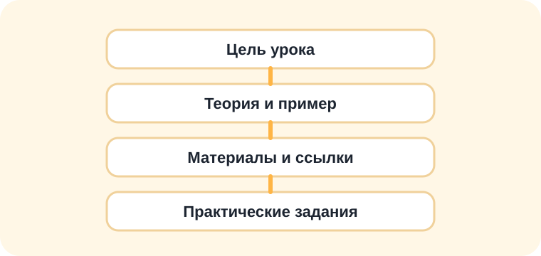

Урок 3
ПРИМС: состояния и переходы
Цель урока: научиться читать простую диаграмму поведения интерактивного объекта или NPC.

Как думать о диаграмме
ПРИМС-диаграмма похожа на схему поведения персонажа. Прямоугольники — это состояния, стрелки — переходы между ними, а подписи на стрелках объясняют, какое событие запускает переход.
Внутри состояния часто есть блок entry. Это команды, которые выполняются при входе в состояние. Иногда есть exit — команды при выходе из состояния.
Состояние — не шаг инструкции
Состояние — это устойчивый режим поведения объекта: Ожидание, Патруль, Погоня, Атака, Открыта. Если объект снова должен ждать, патрулировать или гнаться, он возвращается в уже существующее состояние.
Не нужно рисовать второе состояние Ожидание только потому, что диалог закончился. Это не новый шаг алгоритма, а возврат в тот же режим. Иначе диаграмма превращается в длинную последовательность команд и перестаёт быть машиной состояний.
Проверка диаграммы
- Если прямоугольник отвечает на вопрос «что объект делает сейчас?» — это состояние.
- Если прямоугольник отвечает на вопрос «что выполнить один раз?» — возможно, это действие, а не состояние.
- Если такое состояние уже есть, возвращайтесь в него стрелкой, а не создавайте новый прямоугольник с тем же смыслом.
Простой пример
NPC ждёт игрока, показывает текст при взаимодействии и возвращается в то же состояние ожидания.
NPC молчитигрок взаимодействуетДиалог
ПоказатьТексттекст закрыт: назад в «Ожидание»
Главные слова
- Состояние — что объект делает сейчас.
- Событие — что произошло: игрок нажал, таймер закончился, переменная изменилась.
- Действие — команда модулю: показать текст, открыть дверь, включить индикатор.
- Переменная — память игры: есть ли ключ, накормлен ли ёж, открыты ли ворота.
Задания
- Придумайте объект с двумя состояниями: например, «закрыто» и «открыто».
- Запишите событие, которое переводит объект из первого состояния во второе.
- Выберите действие, которое должно выполниться при переходе.